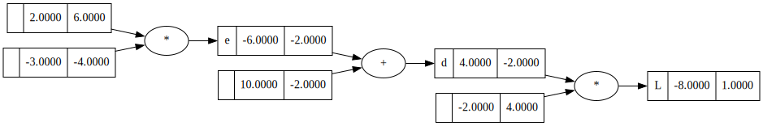
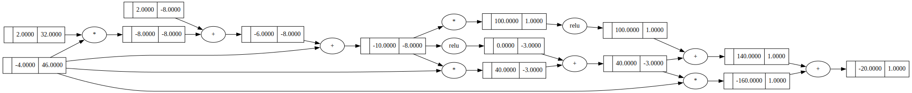

a = Value(-4.0)
b = Value(6.0)
test_eq((a+b).data, -4+6)
test_eq((a-b).data, -4-6)
test_eq((a/b).data, -4/6)
test_eq((a**2).data, (-4)**2)
test_eq(a.relu().data, 0)
test_eq(b.tanh().data, math.tanh(6.0))engine
Simple engine that calculates gradients and backpropagates. Can be used in a simple neural net
Value
Value (data, _children=(), _op='', label='')
Initialize self. See help(type(self)) for accurate signature.
| Type | Default | Details | |
|---|---|---|---|
| data | numeric value wrapped by Value |
||
| _children | tuple | () | inputs to a given Value |
| _op | str | operation that resulted in a given Value |
|
| label | str | label for plotting graphs |
Test simple operations
Test simple derivatives
c = a*b
c.grad = 1
c._backward()
test_eq(b.grad, a.data)
test_eq(a.grad, b.data)a = Value(4.0)
b = a.relu()
b.grad = 1
b._backward()
test_eq(a.grad, 1)a = Value(2.0, label='a') # 2
b = Value(-3.0, label='b') # -3
c = Value(10.0, label='c') # 10
e = a*b; e.label = 'e' # -6
d = e + c; d.label = 'd' # 4
f = Value(-2.0, label='f') # -2
L = d*f; L.label='L' # -8
LValue(data=-8.0, grad=0)Test Backward
L.backward()
draw_dot(L)
x = Value(-4.0)
z = 2 * x + 2 + x
q = z.relu() + z * x
h = (z * z).relu()
y = h + q + q * x
yValue(data=-20.0, grad=0)y.backward()
draw_dot(y)
Test forward and backward pass
def test_1():
x = Value(-4.0)
z = 2 * x + 2 + x
q = z.relu() + z * x
h = (z * z).relu()
y = h + q + q * x
y.backward()
xmg, ymg = x, y
x = torch.Tensor([-4.0]).double()
x.requires_grad = True
z = 2 * x + 2 + x
q = z.relu() + z * x
h = (z * z).relu()
y = h + q + q * x
y.backward()
xpt, ypt = x, y
# forward pass went well
test_eq(ymg.data, ypt.data.item())
# backward pass went well
test_eq(xmg.grad, xpt.grad.item())def test_2():
a = Value(-4.0)
b = Value(2.0)
c = a + b
d = a * b + b**3
c += c + 1
c += 1 + c + (-a)
d += d * 2 + (b + a).relu()
d += 3 * d + (b - a).relu()
e = c - d
f = e**2
g = f / 2.0
g += 10.0 / f
g.backward()
amg, bmg, gmg = a, b, g
a = torch.Tensor([-4.0]).double()
b = torch.Tensor([2.0]).double()
a.requires_grad = True
b.requires_grad = True
c = a + b
d = a * b + b**3
c = c + c + 1
c = c + 1 + c + (-a)
d = d + d * 2 + (b + a).relu()
d = d + 3 * d + (b - a).relu()
e = c - d
f = e**2
g = f / 2.0
g = g + 10.0 / f
g.backward()
apt, bpt, gpt = a, b, g
tol = 1e-6
# forward pass went well
assert abs(gmg.data - gpt.data.item()) < tol
# backward pass went well
assert abs(amg.grad - apt.grad.item()) < tol
assert abs(bmg.grad - bpt.grad.item()) < toltest_1()test_2()